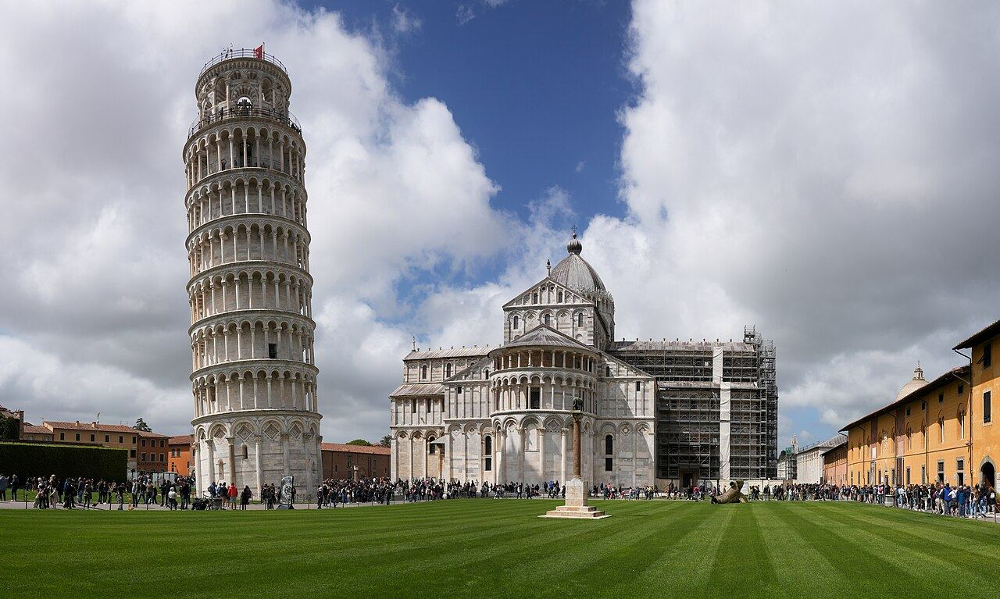

⭐ Найпопулярніша⏱ 2,5 год👣 3 кмПіза: Площа Чудес і не тільки
Вежа, Собор і Баптистерій з їхніми легендами, а потім місто, яке туристи пропускають: набережні Арно, студентські квартали і найсмачніша чечина.
Площа ЧудесНабережні АрноПлоща ЛицарівФотостоп
€120за групу
Обрати